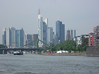
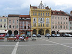
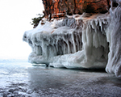
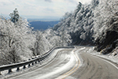
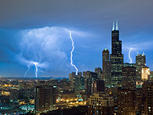
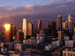
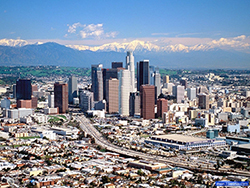
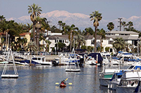

Frankfurt Germany is the financial center of Germany. While not a high end tourist destination it is a good ending or beginning to a trip to middle Europe as many US flights use Frankfurt as a base. A popular tourist activity is to take a river cruise on the Main River which offers excellent views of the cities skyline.

Budweis is a city of about 100,000 people located in the sourthern Czech Republic. It has a charming central plaza and is perhaps best known for its beer.
The ice caves on the Apostle Islands in Bayfield county Wisconsin are a travel destination closer to home. It is still about a 6 hour drive though from the Milwaukee area. The caves form each winter weather permitting.

Another cold weather destination is to head to the mountains of the western United States. Oregon is pictured, but there are destinations closer to Milwaukee like the ski resorts just west of Denver, CO.


The closest big city destination to the Milwaukee area is Chicago. Chicago has many activities no matter the time of year. You can see the whole city from the top of the Willis Tower, pictured here. Chicago can be accessed via a short flight, drive, or train ride from Milwaukee.

Los Angeles is the 2nd largest city in the United States and the celebrity capitol of world. LA is of course also famous for Hollywood and the entertainment business. The LA area is also stunning for its mountain and ocean views as shown in the image.
Los Angeles is a playground for outdoor enthusiasts seeking to get out of the traffic choked city. There are options for surfing, skiing, hiking, and more all within a 2 hours drive of downtown.

Long Beach is a large city in Los Angeles county with many options for travelers. Tourists can access the ocean including the Channel Islands and Catalina Island about 25 miles offshore.
